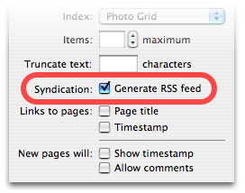

RSS Badge
An RSS Badge is a pagelet that allows visitors to easily find and subscribe to your site's RSS feed. The badge can use one of a number of standard RSS feed icons to clearly indicate that a feed is available.
Visitors click on the badge to view the RSS feed associated with it. With a suitable web browser, the feed will appear in either their browser or preferred RSS reader application. If the visitor has no RSS reader application installed, and their web browser does not support RSS feeds they will see the raw XML source of the feed instead.
If you create a new Weblog or Photo Weblog collection, it will already have an RSS Badge on it.
Note that Sandvox also offers RSS Feed pages and pagelets, which are totally different. An RSS Badge links to an RSS feed for your site; an RSS Feed page or pagelet displays the contents of an RSS feed from another, external site.
Settings
The top of the Inspector contains some general pagelet attributes. The settings specific to the RSS Badge are listed below.
Collection
An RSS Badge must be connected to a collection that is set to generate an RSS feed. If you add a new RSS Badge to such a collection, Sandvox automatically connects it to the collection's RSS feed.
To connect up an RSS Badge:
- Decide the collection that you want to connect the badge to. Generally this will be some kind of Weblog but you can use any collection you like. Select the collection in the Site Outline.
- Open the Page Inspector and click the triangle to view the collection's full settings.
-
Make sure the "Generate RSS feed" box is checked.
 - Select in the Site Outline the page you want the RSS Badge to appear on. This page can be the actual collection itself if you like.
- Click the "Pagelets" item in the toolbar and select "RSS Badge."
- Open the Selection Inspector.
- Drag the target icon to the collection in the Site Outline.
Icon
Select one of the standard RSS feed icons to display, or you can elect to have no icon at all.
The smaller icons can be positioned to the left or the right of the text, while the two large icons can only be placed centrally.
Label
Enter the label that will appear next to the icon. The label is purely optional and may be left blank.
You can also click the green editing marker to add an additional label at the top of the badge.